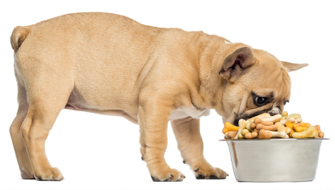
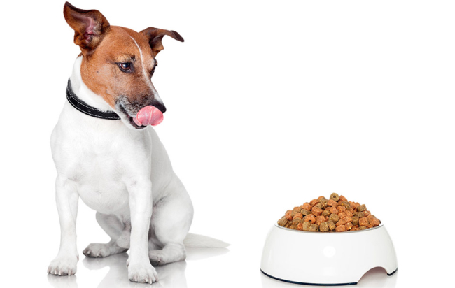
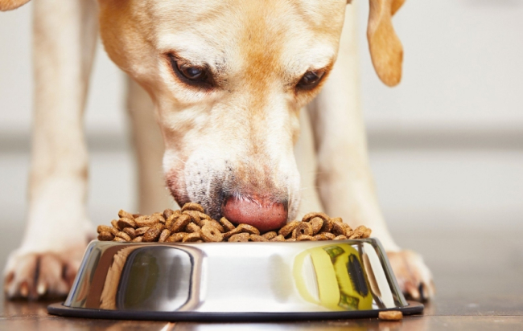

Собака – преданный друг и защитник дома. Чтобы она была здоровой и прожила долгую и счастливую жизнь, нужно кормить собаку правильно! В статье мы рассмотрим основные виды питания собак, особенности, преимущества и недостатки каждого из них, какие существуют системы кормления, перечислим полезные и запрещенные продукты для питомца.
Как кормить собаку в домашних условиях: основные правила
Любая собака – породистая или обычная уличная дворняжка – нуждается в полноценном питании. Организм этих животных отличается от организма людей, поэтому кормить домашнего питомца всем тем, что едят люди, недопустимо. Есть ряд продуктов питания, привычных для человека, но которые могут вызвать серьезные проблемы с работой пищеварительных органов у собак.
Основные правила кормления собак:
- 1) Не давать пищу со стола. Человек употребляет пищу с различными специями и другими ингредиентами, которые могут быть особо вредными для организма собак.
- 2)Нельзя перекармливать животное. Норма ежедневного рациона рассчитывается с учетом возраста собаки и ее породы.
- 3) Количество кормлений – 3-4 раза в день для щенков и 2 раза в день – для взрослых собак. В период беременности, лактации и болезни собаку можно кормить 3-4 раза в сутки.
- 4)В повседневном рационе животного обязательно должны быть полезные для ее организма микроэлементы. 50% рациона составляет мясо и белковая пища, примерно 20-30% отводится злаковым культурам, около 20% – молочная продукция и не более 10% – овощи и фрукты.
- 5) Собаку лучше кормить в одно и то же время по графику, например, за 1.5-2 часа до прогулки или спустя час после выгула.
- 6) Специалисты не советуют подкармливать собаку в течение дня. Дополнительный прикорм актуален только во время физических тренировок.
- 7) После кормления собаки нельзя допускать, чтобы в миске оставались недоеденные продукты. Емкость следует очистить от остатков пищи и помыть.
- 8) Если в доме проживает несколько собак, каждой из них нужно предоставить отдельную миску для еды и воды.
- 9) В свободном доступе домашнего животного всегда должна быть чистая питьевая вода.
Выбор питания для собаки
С появлением в доме собаки желательно сразу определиться с оптимальным видом питания – натуральная пища или готовый промышленный корм. Не спешите делать необдуманный выбор, к решению этого вопроса стоит подходить со всей ответственностью, учитывая породу собаки и собственное удобство. Например, для людей, работающих с утра и до позднего вечера, оптимальный выбор – кормление готовыми кормами, исключающими необходимость приготовления специальной пищи для собаки. Также следует учитывать, что качественный корм для собак стоит недешево. Но и на покупку хороших продуктов питания, необходимых для составления полноценного ежедневного рациона, также придется затрачивать деньги.
Кормление собак готовым кормом
Готовый промышленный корм – удобный продукт для кормления домашних животных, не требующий готовки и проведения расчетов составляющих компонентов, как этого требует кормление натуралкой. Существует два вида готовых кормов для собак – сухой в гранулах и влажный в консервах с различными вкусовыми добавками. Если для кормления питомца выбран сухой корм, очень важно, чтобы в доступе у животного всегда была вода, необходимая для усвоения гранулированной пищи. В ассортименте продукции для животных большой выбор кормов для собак от разных производителей. Все они делятся на несколько категорий: эконом, премиум, супер-премиум. Специалисты не рекомендуют покупать для животных дешевые корма, имеющие некачественный или несбалансированный состав, а также всевозможные добавки и усилители вкуса, небезопасные для организма животного. Такая экономия приведет к еще большим затратам на лечение четверолапого друга.

Рекомендации по выбору корма для собак:
- 1) Учитывайте возраст и размеры собаки. На всех кормах есть маркировки с обозначением, для какого типа животных предназначен конкретный продукт. Например, есть специальные корма для щенков, для беременных и кормящих собак, для животных после стерилизации, кастрации и т. д.
- 2)Внимательно изучите состав корма. Возможно, какие-то ингредиенты являются противопоказанными конкретно вашему животному.
- 3)Обращайте внимание на дату изготовления, срок годности и правила хранения корма. Недопустимо давать питомцу просроченный продукт.
Опытные заводчики и ветеринары рекомендуют выбирать для домашних собак корм класса премиум, супер-премиум или холистики, имеющие сбалансированный состав, полезный для организма животных.
Питание натуральными продуктами
Для многих владельцев оптимальным решением становится выбор натуральных продуктов для кормления собаки. Определяя такой вид питания, нужно сразу рассчитать необходимую суточную порцию для животного, учитывая его возраст и породу. Важно помнить, что в подаваемых продуктах должны быть все необходимые витамины, минералы и другие полезные микроэлементы в правильном соотношении. Если с расчетом рациона возникают сложности, проконсультируйтесь с опытным ветеринаром.
Плюсы натурального кормления:
- 1) Владелец может самостоятельно выбирать качественные продукты для собаки.
- 2) Появляется возможность полностью исключить небезопасные добавки, красители, химические элементы и консерванты из рациона собаки, что неоспоримо пойдет на пользу для ее организма и исключит риски развития различных болезней.
- 3) При выявлении аллергии у собаки на конкретный продукт питания его можно быстро исключить из меню и заменить альтернативным продуктом, не вызывающим подобных реакций.
- 4) Качественное питание натуральными продуктами обеспечит здоровую работу пищеварительного тракта.
Натуральное питание для собаки предполагает приготовление индивидуальных блюд для питомца из качественных и свежих продуктов питания. Недопустимо готовить на неделю вперед. Пища обязательно должна быть свежей. Еда подается животному исключительно в теплом виде (не горячая, но и не холодная).
Смешанное кормление
Некоторые владельцы выбирают для кормления собаки смешанный вид рациона, что предполагает сочетание сухого корма с натуральными продуктами.
Важно:
Некоторые владельцы выбирают для кормления собаки смешанный вид рациона, что предполагает сочетание сухого корма с натуральными продуктами.
- 1) Недопустимо одновременно давать собаке натуральную еду и корм.
- 2) Между кормлением разными видами питания должны быть промежутки в несколько часов. Это обусловлено следующим: на переваривание гранул корма требуется 3-5 часов, а для переваривания обычных продуктов – не более 2.5 ч. К тому же, для переваривания разного вида пищи необходимы различные ферменты, и организму будет сложно усвоить и то, и другое одновременно.
При смешанном кормлении сложно рассчитать соотношение различных микроэлементов в корме и натуральной пище, поэтому прежде чем остановить свой выбор на таком типе рациона, подумайте, готовы ли вы к столь сложным расчетам, ведь от сбалансированности питания будет зависеть здоровье и срок жизни домашнего питомца.
